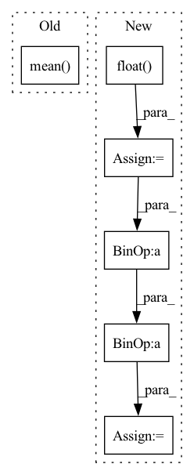

Pattern ID :7511

Before Change
logits, _ = model(data["input"], past=None)
loss = self.criterion(logits.transpose(1, 2), data["output"]).mean(-1)
return {"loss": loss.mean(), "perplexity": loss.exp().mean()}
def evaluate_gpt2_model(args: argparse.Namespace):
After Change
logits, _ = model(data["input"], past=None)
loss = self.criterion(logits.transpose(1, 2), data["output"])
mask = (data["output"] != self.vocab.pad_idx).float()
loss = (loss * mask).sum() / mask.sum()
perplexity = (loss.exp() * mask).sum() / mask.sum()
return {"loss": loss, "perplexity": perplexity}
In pattern: SUPERPATTERN
Frequency: 3
Non-data size: 6
Instances
Fragment ID: 24795002
Project Name: affjljoo3581/gpt2
Commit Name: ca25b19eb1f6d46d8855231c367172ff62e427b0
Time: 2020-08-01
Author: affjljoo3581@gmail.com
File Name: src/gpt2/evaluate_model.py
M Class Name: GPT2EvaluationSpec
N Class Name: GPT2EvaluationSpec
M Method Name: eval_objective(3)
N Method Name: eval_objective(3)
M Parent Class: EvaluationSpec
N Parent Class: EvaluationSpec
M File Name: src/gpt2/evaluate_model.py
N File Name: src/gpt2/evaluate_model.py
M Start Line: 41
M End Line: 43
N Start Line: 40
N End Line: 46
'>
Before Change
loss = torch.sum(loss, dim=-1)
loss = torch.mean(loss, dim=0)
loss = torch.mean(self.alpha * loss)
return loss.mean()
class MutilDiceLoss(nn.Module):
After Change
def forward(self, y_pred, y_true):
if torch:
CE_loss = nn.CrossEntropyLoss(reduction="none", weight=self.alpha)
logpt = CE_loss(y_pred.float(), y_true.float())
pt = torch.exp(-logpt)
loss = (((1 - pt) ** self.gamma) * logpt).mean()
else:
// not work
// write version
'>
Fragment ID: 24794968
Project Name: junqiangchen/pytorchdeeplearing
Commit Name: 2d21a0e31327b055418cf5eaf6b21d2b1d5b916f
Time: 2022-06-22
Author: 1207173174@qq.com
File Name: model/losses.py
M Class Name: MutilFocalLoss
N Class Name: MutilFocalLoss
M Method Name: forward(3)
N Method Name: forward(3)
M Parent Class: nn.Module
N Parent Class: nn.Module
M File Name: model/losses.py
N File Name: model/losses.py
M Start Line: 154
M End Line: 167
N Start Line: 133
N End Line: 155
'>
Before Change
return predictions
def masked_mse_loss(self, input, target, mask, background_mask):
return (background_mask * (mask * (input - target) ** 2)).mean()
def general_step(self, batch, batch_idx, mode):
A function to share code between all different steps.
After Change
//return (background_mask * (input - target) ** 2).mean()
input = torch.randn(2, 100, 3)
target = torch.randn(2, 100, 3)
mask = (input > 0).float()
background_mask = torch.randn(2, 100, 1)
value = background_mask * (input - target) ** 2
mask_sum = torch.sum(mask, dim=1)
mask_sum_modified = torch.clamp(mask_sum, min=1.0)
loss = torch.sum(value * mask) / mask_sum_modified
return loss
// TODO -> do not take into account -1 flow information (or filter them in WaymoDataset?)
'>
Fragment ID: 24794992
Project Name: jabb0/fastflow3d
Commit Name: bea207737f9d35e204c73ecfcde3de582a10956d
Time: 2021-06-28
Author: carlosmn1997@gmail.com
File Name: models/FastFlow3DModelScatter.py
M Class Name: FastFlow3DModelScatter
N Class Name: FastFlow3DModelScatter
M Method Name: masked_mse_loss(5)
N Method Name: masked_mse_loss(5)
M Parent Class: pl.LightningModule
N Parent Class: pl.LightningModule
M File Name: models/FastFlow3DModelScatter.py
N File Name: models/FastFlow3DModelScatter.py
M Start Line: 118
M End Line: 118
N Start Line: 120
N End Line: 128